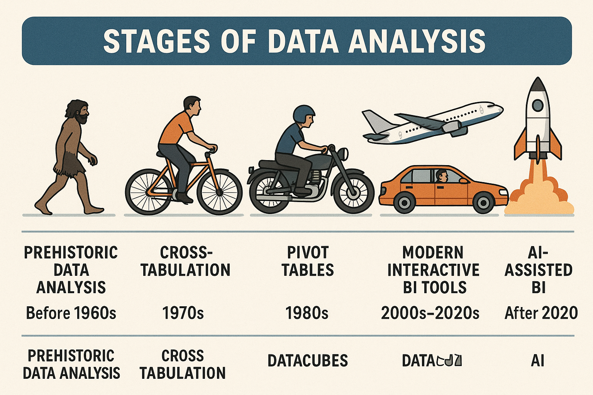
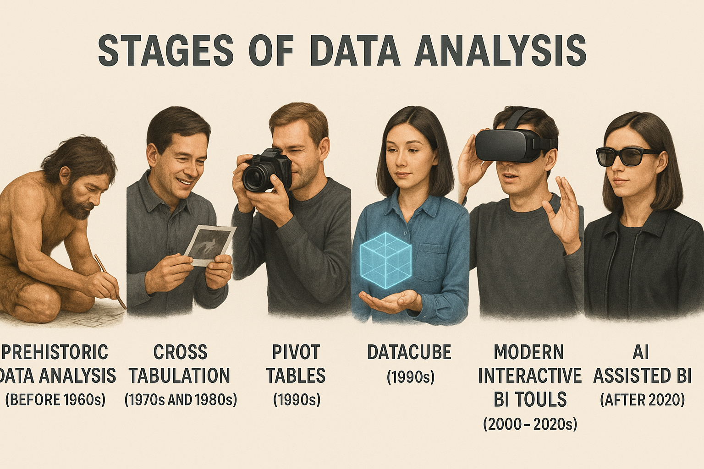

Understanding the journey from raw data to valuable insights helps teams stay aligned and focused on measurable impact. The stages below combine both the business and technical perspectives that guide a Power BI project from discovery to delivery.
Start by clarifying the decision that needs to be made and the metrics that will signal success. Interviews with stakeholders, quick whiteboard sessions, and reviewing existing reports provide the context you need to frame the analytical goal in plain language.
Once the analytical target is clear, you can profile and shape the data, build a semantic model, and iterate on visuals that make the story obvious. A tight feedback loop with stakeholders ensures the report answers the original question and sparks the next wave of inquiry.
